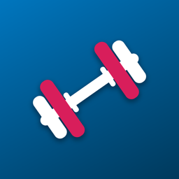

Last updated: 28 October 2026
Data controller: Luca Gabella – contact: support@lgappforfun.org
Easy Gym does not collect any personal data. There are no accounts, no analytics, no ads and no servers of ours.
Your workouts and history are stored on your iPhone and Apple Watch. If iCloud is on, they are also copied to your private iCloud database, which only you can access: we cannot read it.
With your permission, Easy Gym reads heart rate, active calories and body weight from Apple Health to show them during a workout and to estimate calories, and saves finished workouts to Apple Health. Health data is never shared, sold or used for advertising, and never leaves your devices except through Apple's own Health and iCloud sync. You can change these permissions at any time in the Health app.
When you share a workout, a file is sent only to the people and apps you choose.
You have the rights of access, rectification, erasure, restriction, portability and objection (GDPR arts. 15–22). Since we hold no data about you, deleting the app and its iCloud data removes everything. Contact support@lgappforfun.org; you can also lodge a complaint with the Italian Data Protection Authority (garanteprivacy.it).
Titolare del trattamento: Luca Gabella – contatto: support@lgappforfun.org
Easy Gym non raccoglie dati personali: nessun account, nessuna statistica d'uso, nessuna pubblicità, nessun nostro server. Schede e storico restano su iPhone e Apple Watch e, se iCloud è attivo, nel tuo database iCloud privato, che noi non possiamo leggere.
Con il tuo permesso l'app legge da Apple Salute battito, calorie attive e peso per mostrarli durante l'allenamento e stimare le calorie, e salva gli allenamenti conclusi in Salute. I dati di Salute non vengono mai condivisi, venduti o usati per pubblicità. Puoi cambiare i permessi in qualsiasi momento dall'app Salute.
Hai i diritti previsti dagli artt. 15–22 GDPR; scrivi a support@lgappforfun.org o rivolgiti al Garante (garanteprivacy.it).